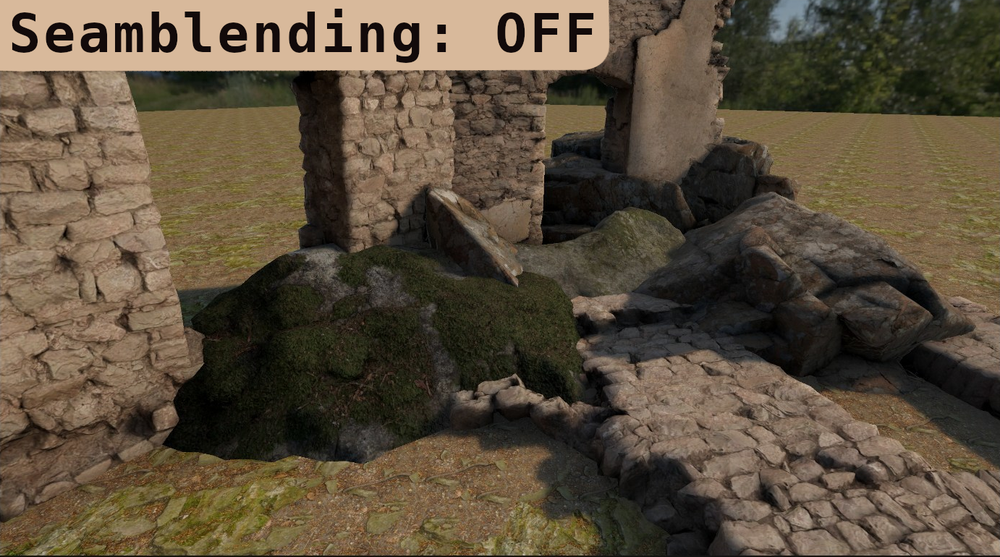
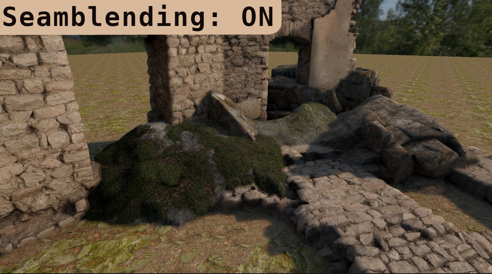

Idea
In a previous article we went over a technique to blend seams of meshes by mirroring pixels in
post processing.
However the basic implementation ran very slow and was not practical.
In this article I'll go over how to improve the technique using indirect compute shaders.
We'll be using openGL for simplicity but the code is practically identical on different
platforms
- Recap
We will go over the steps briefly again but the previous article goes more in depth in the base technique
Previous article- Passes
The technique relies on 3 logical passes,
First we have to find where object seams are.

Then we have to find the exact offset to each closest seam to mirror around after.
This is the expensive part so we should only do this on the pixels close to the seams
Image shows UV offsets to seam

Then by using these offsets to sample the other side of the seam, we can mirror the pixels.
This allows us to blend while keeping the texture detail of the object.
Outlined rock to show where the seam is, the mirror is not perfect but that is barely visible


Masking
Our first step is masking where the seams are.
There are a lot of ways of checking this, to allow the most control of where the seams are I
will be using a per object ID
As an example you can do this using either a stencil ID or an seperate output in your
shading or GBuffer pass.
If you draw this to a screen This should get you something like this:

To find the seams we can run a basic outline shader on this:
// GLSL, Compute:
float aspect = float(u_resolution.x) / float(u_resolution.y);
vec2 directions[4] =
{
vec2(1, 0),
vec2(-1, 0),
vec2(0, aspect),
vec2(0, -aspect)
};
bool foundSeam = false;
//Scale by pixel's depth to make outlines not grow over distance
float maxRange = u_blendRadius / sceneDepth;
//Check in 4 cardinal directions for ID change
for (int i = 0; i < 4; i++)
{
vec2 offset = directions[i] * maxRange;
vec2 sampleUV = uv + offset;
uint otherId = textureLod(u_id, sampleUV,0).x;
// check if differing id
if (otherId != objectId)
{
foundSeam = true; // - Found seam!
}
}
if (foundSeam) {} // Now we can check if we found a seam
Now it might seem tempting to just return here if there is no seam and then run the expensive
part of the shader.
However this would barely improve performance, that is why we will use indirect dispatches
Indirect compute shaders
GPU warps
But why would a return statement be so slow on the gpu?
This is due to how the GPU orders tasks, keep in mind i will be oversimplifying here
When we run a compute dispatch on the GPU our dispatch groups of threads are ran in even
bigger groups
also called warps(or waves).
Lets say we run this
layout(local_size_x = 4, local_size_y = 4) in;
void main()
{
//Logic
}
glDispatchCompute(num_groups_x: 8, num_groups_y: 8, num_groups_z: 1);
This will run 32x32x1=1024 threads on our GPU
Lets say our GPU supports 32 threads in a warp,
That means our program will run in 32 warps of 32 threads.

Since these warps are executed together it has to wait for all threads in the warp to be
finished before starting a next one.
This is fine when all threads are basically the same duration but will slow things down
if
our threads have a lot of branching.
For example, if our program looked like this:
layout(local_size_x = 1, local_size_y = 1) in;
void main()
{
uint id = gl_GlobalInvocationID.x;
if (id % 2 != 0) // If the id is an uneven number
{
sleep(500ms); // example, (sleep function doesnt actually exist)
}else {
return;
}
}
This means our warp will look like this

The warp takes ~500ms since it has to wait for the longest thread.
That means adding a mask to our effect doesnt help a lot if a warp contains an unmasked
pixel.
Luckily there is a solution.
Indirect dispatches
Instead of putting everything in 1 compute shader, we can seperate it into 2
seperate
dispatches.
In our first shader we just run the mask code and output the found locations in a
buffer:
// GLSL, Compute:
layout(local_size_x = 8, local_size_y = 8) in;
//This is the buffer we will output in <changed>
layout(std430, binding = 0) buffer ArgBuffer { <changed>
//The arguments the second pass will be dispatched with <changed>
uint dispatch_x; <changed>
uint dispatch_y; <changed>
uint dispatch_z; <changed>
<changed>
// how many locations we written <changed>
uint count; <changed>
// pixel locations for second pass <changed>
uvec2 pixels[]; <changed>
}; <changed>
/* In HLSL we would instead use
AppendStructuredBuffer<uint2> pixelLocations;
*/
void main() {
uvec2 coord = gl_GlobalInvocationID.xy;
//Guard for over dispatching
if (any(greaterThanEqual(coord, u_resolution))) return;
vec2 uv = (coord+0.5) / vec2(u_resolution);
float rawDepth = textureLod(u_depth, uv,0).x;
float sceneDepth = LinearizeDepth(rawDepth, u_nearfarplane.x, u_nearfarplane.y);
uint objectId = textureLod(u_id, uv,0).x;
float aspect = float(u_resolution.x) / float(u_resolution.y);
vec2 directions[4] =
{
vec2(1, 0),
vec2(-1, 0),
vec2(0, aspect),
vec2(0, -aspect)
};
bool foundSeam = false;
//Scale by pixel's depth to make outlines not grow over distance
float maxRange = u_blendRadius / sceneDepth;
//Check in 4 cardinal directions for ID change
for (int i = 0; i < 4; i++)
{
vec2 offset = directions[i] * maxRange;
vec2 sampleUV = uv + offset;
uint otherId = textureLod(u_id, sampleUV,0).x;
// check if differing id
if (otherId != objectId)
{
//Add the found location to our buffer <changed>
uint slot = atomicAdd(count, 1u); // Thread safe way of counting where we are in the buffer <changed>
pixels[slot] = coord; <changed>
return; <changed>
}
}
}
This creates our final effect

Improvements
In this article I went over a simpler way to implement this but it is very slow and has some artifacts.
There are a lots of improvements still left to be done which i will not cover in this article, here are some examples:
- Compute, There are a lot of performance benefits available if you port this to compute, for example by running a cheap masking pass you can only run the expensive search on pixels with edges.
- Better searching, A search kernel is a very limited way of searching and there are way better ways like a spiral pattern that refines over multiple iterations.
- Custom id's using material property blocks you can set custom id's for objects allowing you to control what blends with what or even blend sizes.
- Normal-based filtering,adding a check for normal difference, This fixes transitioning happening around corners or weird angles.
- Multiple-seam support,adding support for detecting multiple seams this fixes incorrect blending when more than 2 objects intersect at a point
Source code/Implementation
An open implementation of this code is available for free on the Unity Asset Store:
Free & Open - Asset StoreThere is also a paid version which implements most of the improvements mentioned above and more
Pro (Paid) - Asset Store